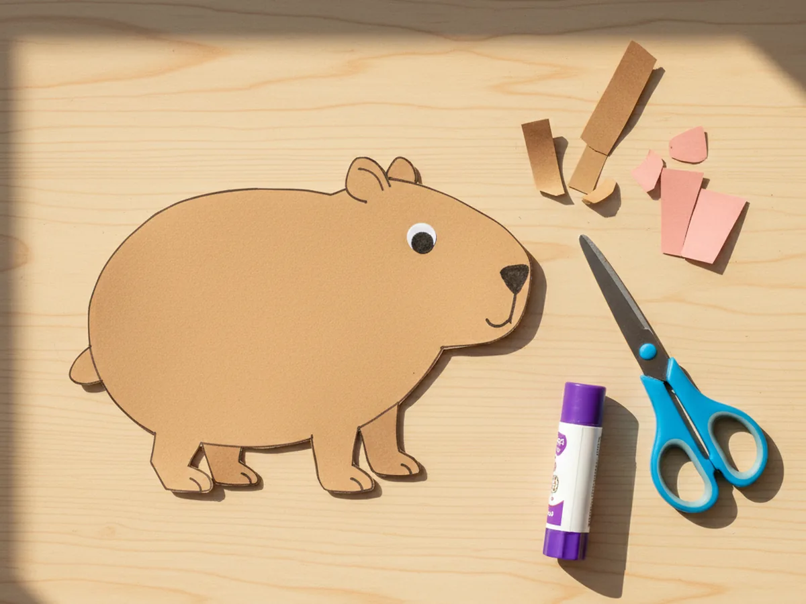
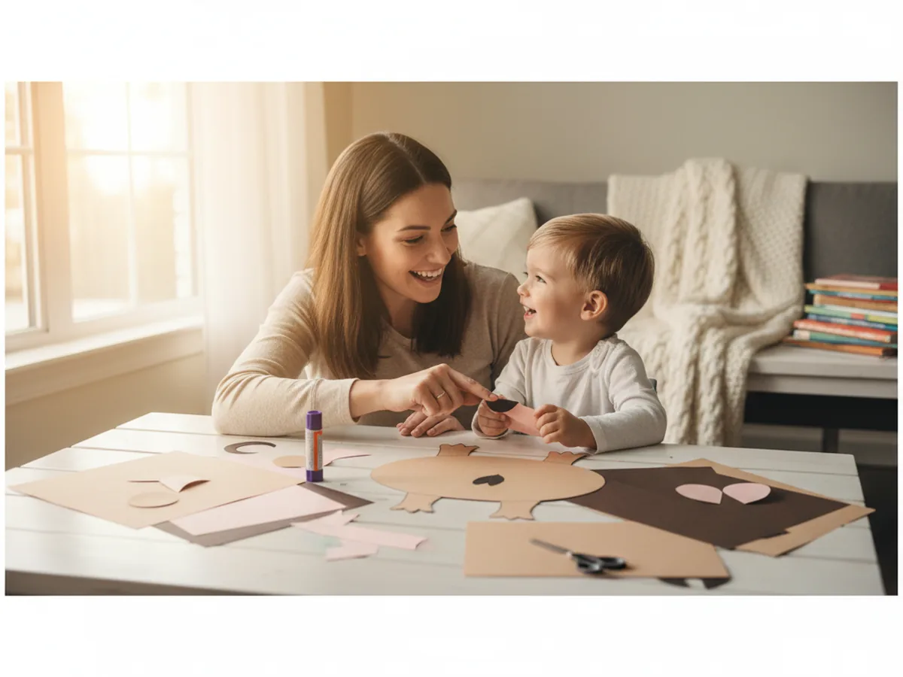
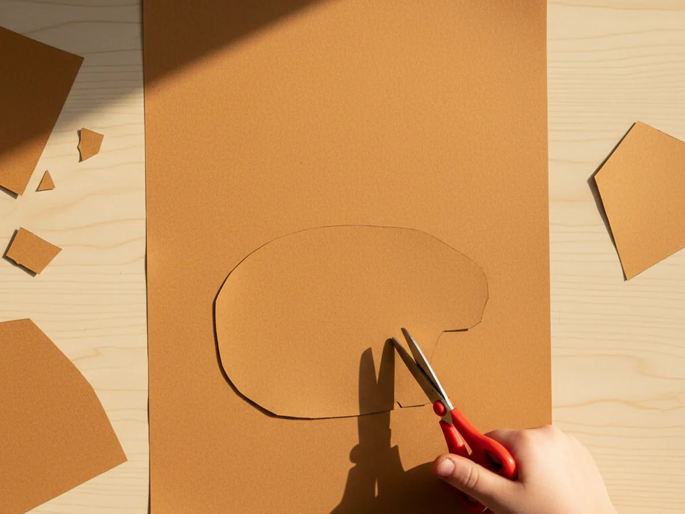
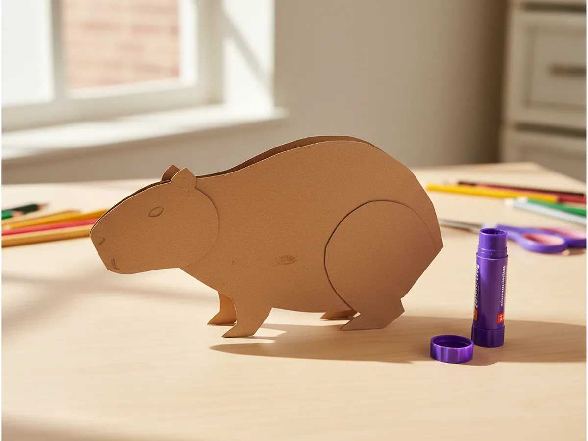
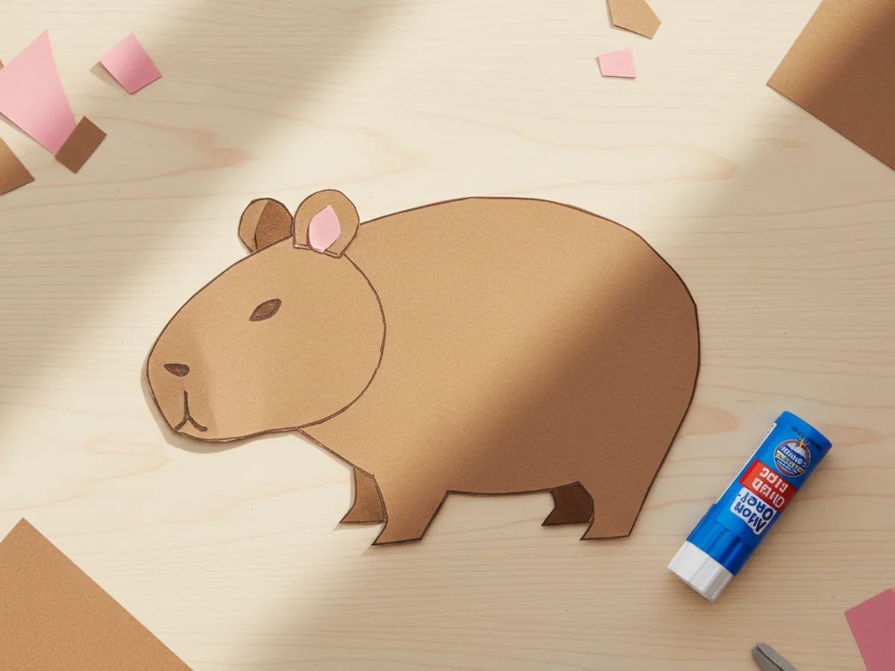
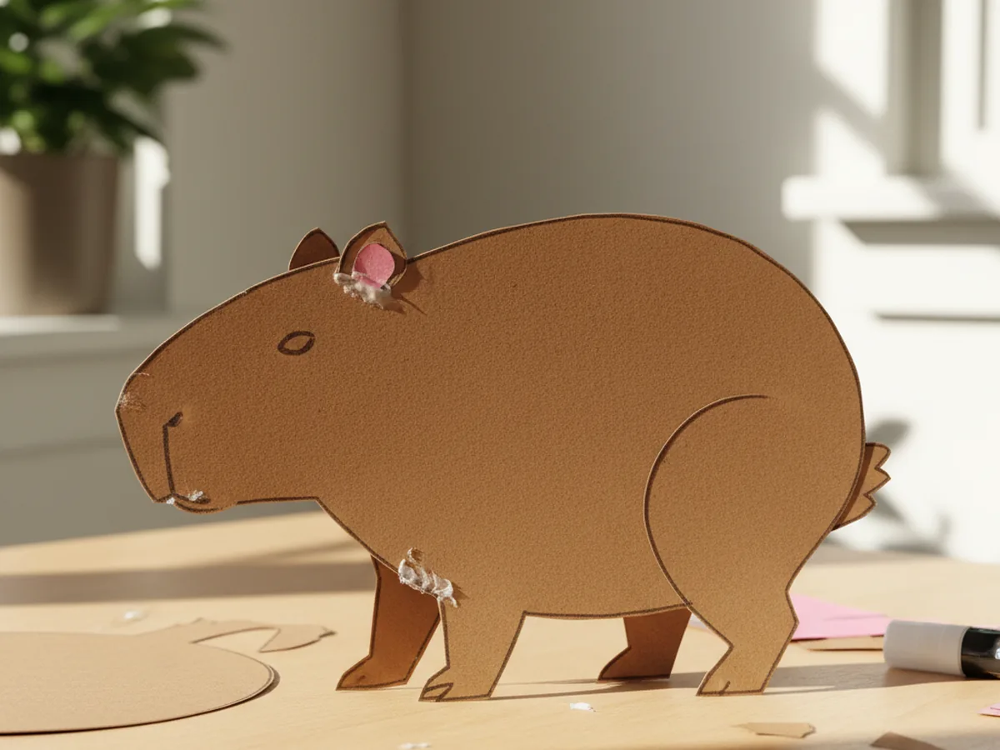
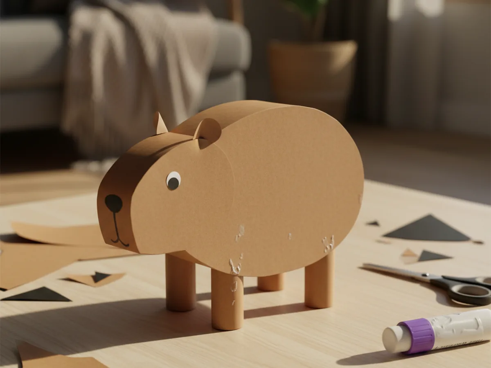
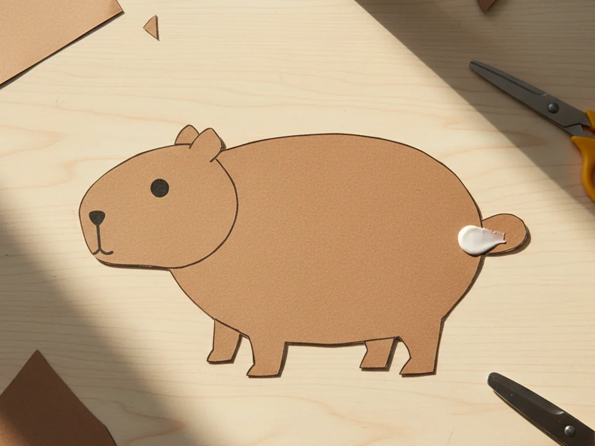
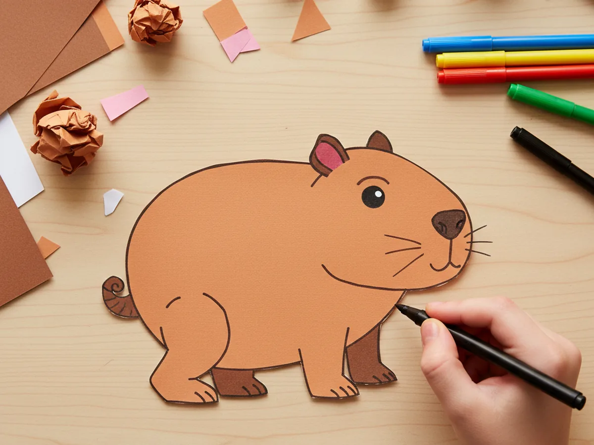
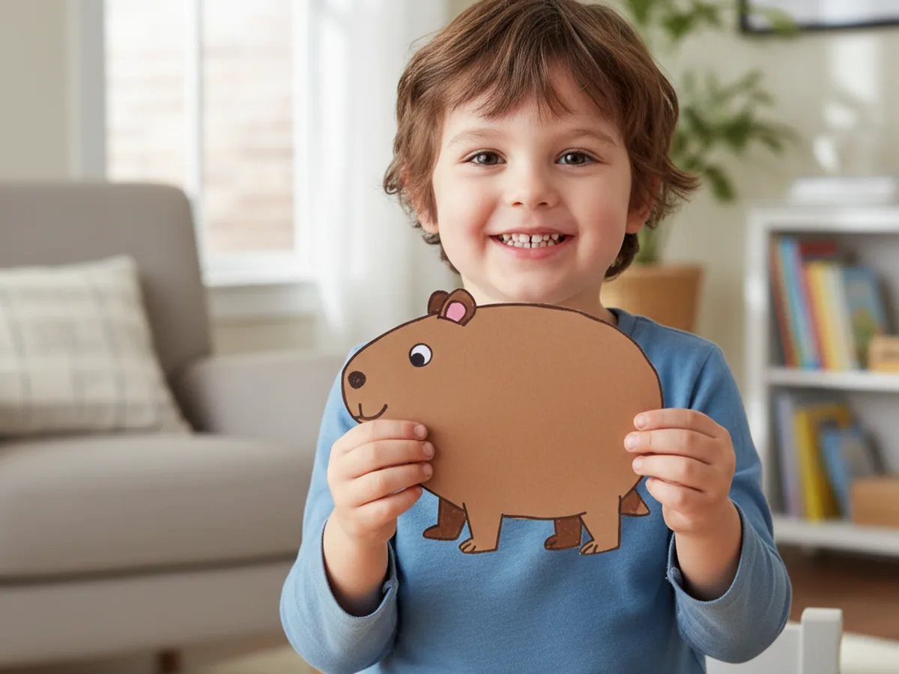

This little capybara paper craft is one of those cozy projects that feels relaxed from the very first cut and ends with the cutest paper friend you have ever seen. You cut a chunky brown body, glue on a round head, layer two soft pink-lined ears, add four short stubby legs, pop on tiny black eyes and a nose, and finish with a sweet tail. The whole craft has the same calm, sleepy energy as a real capybara, and your child will absolutely fall in love with it. 🦫
It is a peaceful, low-mess activity for ages 3 and up that fits perfectly at the kitchen table on a slow afternoon. Toddlers can press the shapes flat and pick the pink scraps for the ears, while older kids can manage most of the cutting on their own. Either way, your capybara paper craft turns out chubby, friendly, and very huggable, just like the gentle giant rodents kids see in nature videos.
Why Kids Love This Craft
Kids are wild about capybaras right now. Something about that round body, the calm face, and the way they sit so still in the water makes children find them deeply funny and lovable. When your child realizes they can build their own little paper capybara from a few simple shapes, the excitement is real. As soon as the head goes on, most kids start naming it, telling stories about its life in the river, or pretending it is best friends with a duck or a tiny orange.
This capybara paper craft for kids also gently builds skills without ever feeling like a lesson. Cutting the rounded body and the soft ear shapes supports scissor practice. Layering the pink inner ears onto the brown ears helps with hand-eye coordination. Sticking on the eyes and nose is a wonderful little fine motor moment. None of it feels like work, because the whole project is wrapped in the warm, sleepy charm of a capybara.
The decorating step is where personality shines through. Some kids draw a tiny orange on the capybara's head, just like in the famous photos. Some add hearts on the ears. Some draw a sleepy half-smile so it looks like the capybara is about to take a nap. There is no wrong version of an easy capybara paper craft, and that freedom is exactly what makes children proud of what they made. By the time the last marker stroke is dry, the capybara has a name, a story, and usually a brand-new spot on the kitchen counter or the bedside table. 💛

What You'll Need
Here is everything you need to make this capybara paper craft at home, and most of it is probably already in your craft drawer.
- Crayola Construction Paper, 240 ct, gives you brown, pink, and black sheets for every part of the capybara
- Astrobrights Cardstock, 65 lb Bright Assortment, sturdier than regular paper if you want a body that holds up to play
- Elmer's Disappearing Purple Glue Sticks, 4 pack, easy for little hands and dries clear so no white residue shows on the body
- Fiskars Blunt-Tip Kids Scissors, safe for ages 4 and up and just right for these gently rounded shapes
- UPINS Self-Adhesive Googly Eyes, 1000 ct, optional swap if your child prefers a wigglier eye instead of black paper circles
- Sharpie Fine Point Markers, Black, makes crisp small lines for the smile, whiskers, and tiny toe details
- Crayola Broad Line Markers, for adding playful details like a tiny orange on the head or pretty patterns on the ears
- A pencil, optional for sketching the body and head before cutting
Step-by-Step Instructions
Take this one calm step at a time and your child will have their very own paper capybara in about half an hour. Let them help with every part, even if they just press the shapes flat for you.
Step 1: Cut the Capybara Body
Start by cutting one chunky rounded oval shape from warm light-brown construction paper, about 6 inches wide and 4 inches tall. Think of a soft potato shape, slightly longer than it is tall, with no sharp corners. There is no need to cut a separate head and body just yet, since the head will go on as a smaller piece in the next step. Use a pencil to lightly sketch the outline first if your child is doing the cutting. Slightly imperfect curves give the capybara paper craft a charming handmade look.

Step 2: Attach the Head
From the same brown paper, cut a smaller rounded shape about 3 inches wide for the head. The head is shaped a little like a fat egg or a soft rounded triangle with no points. Apply glue to one side of the head and press it onto the front-left edge of the body so it overlaps slightly with the oval. The head should sit at roughly the same height as the top of the body, so the capybara reads as one chunky shape. This is the moment the project suddenly starts looking like a real capybara.

Step 3: Add the Ears
Cut two small rounded ears from brown paper, each about 1 inch wide and slightly taller than they are wide. Then cut two slightly smaller pink ovals to layer inside the ears. Glue one pink shape onto the center of each brown ear, then glue both ears onto the very top of the head. Capybara ears are tiny and round, so resist the urge to make them big. Keeping them small is what makes the cute capybara paper craft look like the real animal instead of a generic rodent.

Step 4: Add the Stubby Legs
Cut four short stubby legs from brown paper, each about 1 inch tall and 1 inch wide. They should look more like little blocks than long animal legs, since capybaras have famously short, chunky legs. Glue all four legs along the bottom edge of the body, with the front two near the front of the body and the back two near the back. Let them barely peek out below the oval, just enough to show. The capybara should look almost like a fluffy loaf with little legs underneath.

Step 5: Add the Eyes and Nose
Cut two small black paper circles for the eyes, each about the size of a pencil eraser. Glue them onto the head, slightly toward the top, with a little space between them. Then cut a tiny black oval, about half the size of a pea, and glue it at the very front tip of the head as the nose. If your child prefers, you can swap the black eye circles for self-adhesive googly eyes. Either way, this is the moment the capybara suddenly has personality and that gentle, sleepy expression people love.

Step 6: Add the Tail
Capybara tails are very short and easy to miss in real photos, so this part is quick. Cut a small rounded brown paper tail, about half an inch wide and slightly oval. Glue it onto the back-right edge of the body so it sits short and round, almost blending in with the body. This tiny detail brings a real authentic touch to your paper capybara craft and makes it look thoughtfully made.

Step 7: Decorate the Capybara
Now for the playful part. Hand your child the markers and let them go to town. They might draw a soft little smile under the nose, a few tiny whiskers on each cheek, or small toe lines on each foot. Some kids love drawing a tiny orange or a slice of watermelon on top of the capybara's head, like the famous photos online. Once the marker is dry, your capybara paper craft is officially finished and ready to start its sleepy, peaceful little life on your fridge or windowsill. ✨


Variations to Try
Spa Day Capybara: Make a second smaller paper hot tub from blue construction paper and let your child glue the capybara so it sits halfway inside. Add little paper orange slices floating around it for the famous capybara spa scene. This version is hilarious and one of the most fun ways to turn the craft into a tiny story.
Mommy and Baby Capybara: Make two capybaras together, one large and one small, and place them side by side or one tucked under the mommy's chin. This sweet version turns the craft into a story about your own family bond, which kids absolutely adore.
Toilet Paper Roll Capybara: Wrap a brown sheet of construction paper around an empty toilet paper tube as the body, then add the same paper head, ears, and legs. The 3D version turns the craft into a sturdier little toy that stands on its own and is wonderful for slightly older kids who want a paper figurine to play with.
Final Thoughts
A simple capybara paper craft is one of those projects that proves you do not need anything fancy to make something your child will treasure. A few scraps of paper, a glue stick, and 35 minutes together at the table is all it takes. The real win is the moment your little one picks up their finished capybara, gives it a tiny voice, and decides it lives in the bathtub from now on. That is the kind of small, magical moment that stays with both of you. Happy crafting, mama.
More Crafts You'll Love
If your family enjoyed making this little capybara, here are two more sweet animal crafts to try next.